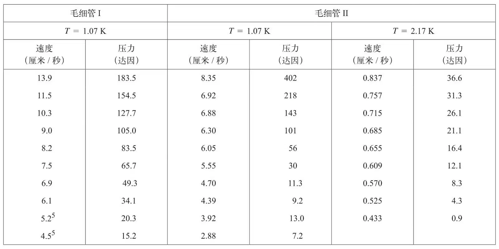
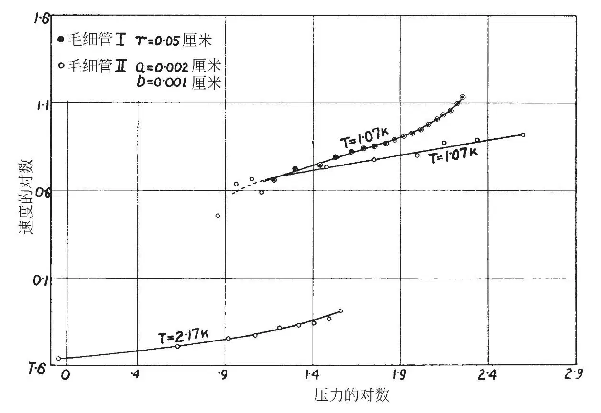

英文
英文艾伦，麦色纳
编者按
在剑桥，物理学家约翰·艾伦和冬·麦色纳得出了与卡皮查相同的结论（见前一篇文章）。正如他们在这篇文章中介绍的，他们利用液体流过毛细管的实验，也试图去测量低于“λ点”（2.18 K）时液氦的黏度。但是与卡皮查的测量值相比，他们的结果仅仅得出了黏度值的上限。他们注意到他们观察到的流动现象非常奇特，它与两端施加的压力差无关。他们推测液体实际上是掠过表面。后来液氦超流态的普遍理论成功解释了这些现象，这是一种源于量子力学行为的状态。 英文
对液氦II各种性质的探索促使我们更细致地研究它的黏度。本文作者之一[1]曾经通过测定振动圆柱的阻尼推导出液氦II黏度的上限为10–5单位（厘米克秒制）。我们得到的结论与卡皮查在前文中叙述的相同；也就是说，由于测量过程中雷诺数很高，这一测量可能反映的是非层流的流动形式。 英文
本文的数据是通过观测液氦II在长毛细管中的流动获得的。其间用到了两种毛细管；第一种毛细管带有一个半径为0.05厘米、长为130厘米的圆形孔道，并与一个直径为5厘米的储液管相接；第二种毛细管是温度计毛细管，长93.5厘米，具有椭圆形的横截面，其半轴长分别为0.001厘米和0.002厘米，整个毛细管与直径为0.1厘米的储液管相连。测量方法是：将连接毛细管的储液管上下移动，以便于使储液管中的液氦平面位于周围液氦平面的上方或下方约1厘米处。利用测高计的目镜刻度和秒表便可确定储液管中液面的移动速率；当内外液面一致时即可停止测量。附表中数据显示了流经毛细管时的速度和相应的毛细管两端的压力差，对它们分别取对数绘于图中。 英文

从上表明显可以看出：
（a）当压位差p大幅度改变时，流动速度q的变化不大。对于较细的毛细管，二者之间的关系近似为p∝q6，但是在速度最低的时候，幂次似乎更高。 英文
（b）对于给定的压位差和温度，当横截面面积以103数量级变化时，流动速度只发生微小的改变。 英文
（c）对于给定的压位差和确定的横截面，在温度从1.07 K变化到2.17 K的过程中，流动速度变化了10倍左右。 英文

（d）在较粗的毛细管中，对于略高的流动速度，压力－速度之间的关系近似为p∝q3，其中q的幂次随速度增加而降低。 英文
为了计算出黏度的可能上限，我们假定层流运动的计算公式即p∝q成立，那么就可以得到η＝4×10–9单位（厘米克秒制）。这个结果与卡皮查给出的上限是一致的，因为他使用的流动速度比我们所用的高很多，所以得出的关系式为p∝q2，他最后给出的黏度上限是η = 10–9单位（厘米克秒制）。 英文
不过，当流动速度与压力无关时，我们所观测到的这种流动类型一定不属于层流，甚至不属于普通的湍流。因此，根据我们的测量数据任何已知的公式都不可能给出一个很有意义的“黏度”数值。液氦II可能掠过管壁，在这种情况下，任何流动方法都无法显示出液体的“黏滞阻力”。 英文
有人认为用湍流也许能够解释氦II的高热导率，对此我们计算的结果是，只有流速大约为104厘米/秒左右时，才足以在艾伦、佩尔斯和乌丁的实验[2]中观测到的温度梯度条件下传输所有输入的热量。而另一方面，在实验操作下沿着热传导毛细管的压力差所能产生的最大流速可能不会超过50厘米/秒。由此看来，无衰减的湍流运动并不能解释在氦II中观测到的高热导率。 英文
（王耀杨 翻译；于渌 审稿）